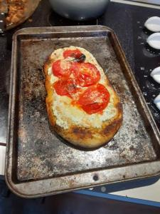

This is the side site dedicated to showing off and flexing some of the things ive cooked. And my instagram because im shameless. I used to post pictures of what i've cooked here. But I don't as much any more. I will in the future tho.[ right here. ]
This here is the first ever serious thing I attempted. Macarons with blackcurrent berry buttercream. They were kinda ugly but thats fine because it tasted absolutely awesome. Baking is not my forte.
This is something im very proud of here. This was the first time I made pasta by hand. I made spinach and ricotta ravioli with roasted bell peppers in a cream sauce. It took a while, but oh my god it was so good. Im very proud with this one.
 Check this out! I made a flatbread by hand. It was pretty good but when I was roasting the tomatos on top in the oven, I actually used too much oil. When it spattered, it caught on the heating element and lit the inside of my oven on fire LOL. It was worth it, though. It was good. Hand made flatbread + roasted tomatos + ricotta cheese + lemon juice + spicy honey = swag!
Heres a link back to the home page.[ right here. ]